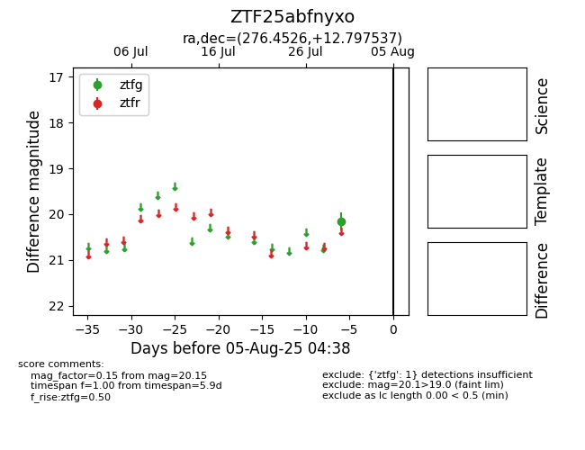

Target ZTF25abfnyxo at 2025-08-05 04:38, see:
FINK: fink-portal.org/ZTF25abfnyxo
Lasair: lasair-ztf.lsst.ac.uk/objects/ZTF25abfnyxo
ALeRCE: alerce.online/object/ZTF25abfnyxo
alt names
ZTF25abfnyxo (ztf,fink)
coordinates:
equatorial (ra, dec) = (276.4526,+12.79754)
galactic (l, b) = (41.5875,+11.41115)
photometry
last ztfg=20.15
1 ztfg detections
